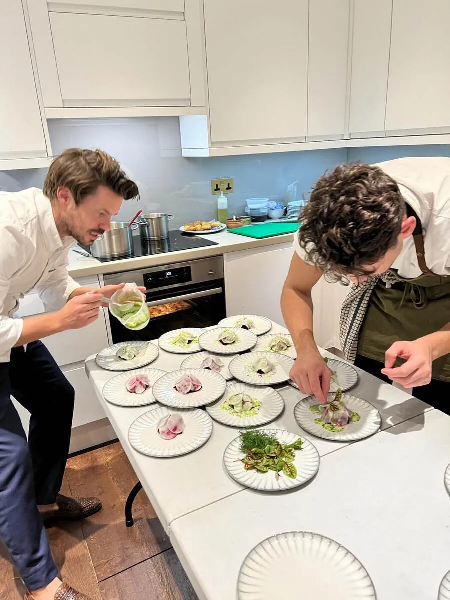
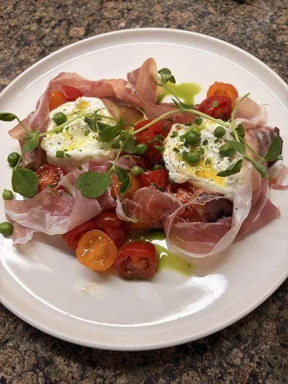
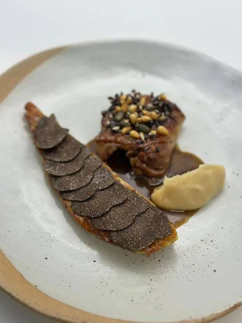
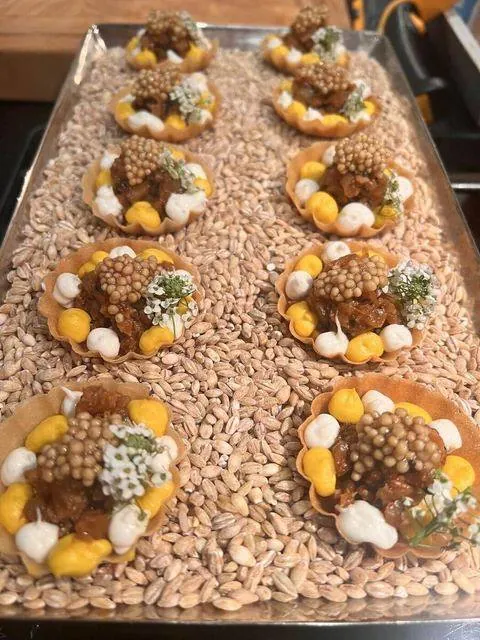
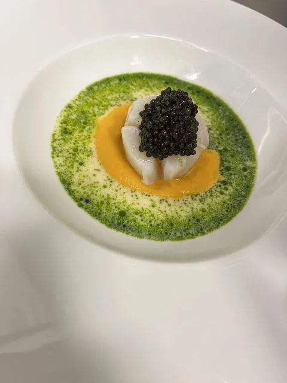
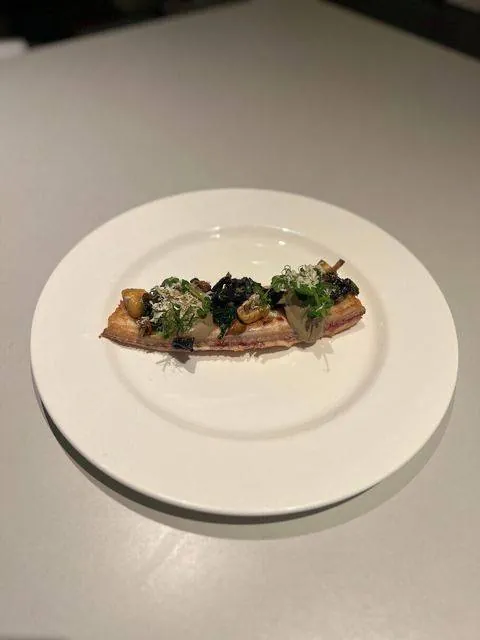

One practical question that comes up before almost every booking: does a private chef bring their own equipment, or do they need a fully professional kitchen to work with? The answer is reassuringly simple.
01Most bookings work with a standard home kitchen
A well-equipped domestic kitchen — a working oven and hob, decent knives available if needed, and standard pots and pans — is enough for the vast majority of private chef bookings. You don't need professional-grade equipment installed.
02What a chef typically brings themselves
Specialist tools specific to the menu — particular knives, a specific pan for a paella, precision equipment for delicate plating — are usually brought by the chef, so you don't need to source anything unusual yourself.
03What's helpful to have confirmed in advance
It's useful to confirm oven type and size, hob configuration, and available fridge and counter space ahead of the event, particularly for larger menus or events with multiple courses being prepped simultaneously.



04Unusual venues need extra planning
For events on a yacht, in a marquee, or at a venue with limited kitchen facilities, equipment needs are discussed and planned for well in advance — see how this is approached for yacht events, where galley setups vary significantly.
05What happens to the equipment afterwards
Anything the chef brings leaves with them at the end of the event, and your own kitchen equipment is cleaned and returned exactly as it was found.
06A Quick Walkthrough Worth Doing in Advance
For larger or more complex menus, a short video call or photos of your kitchen shared in advance can help confirm everything will run smoothly on the night — oven size, hob type, available counter space, and where the chef can set up without disrupting the rest of your home. This small step, done a week or two ahead, removes almost all uncertainty about how the evening's logistics will actually work.



07What to Do If Your Kitchen Genuinely Lacks Something Essential
If your kitchen is missing something a specific menu genuinely requires — a large enough oven for a particular dish, for example — this is worth flagging early so the menu can be adjusted, or arrangements made to bring in the right equipment ahead of time.
08One Less Thing to Worry About
Most clients are relieved to learn how little they need to prepare on the equipment front — it's one less thing to think about while planning the rest of the event.
09Peace of Mind for the Host
Knowing that equipment logistics are almost entirely handled for you removes one more thing to worry about while planning your event, letting you focus your energy on the parts of hosting you'll actually enjoy.
10A Final Reassurance
If you've been putting off booking a private chef out of concern about your kitchen, it's worth reaching out anyway — the vast majority of home kitchens are entirely sufficient for a genuinely excellent evening.
11Nothing Left to Worry About
By the time the chef arrives, equipment is one detail you can safely cross off your own list entirely.
12Planning around the kitchen you have
The most useful thing a host can do is share a few photographs or a short description of the kitchen: the number of hobs, oven size, fridge space and where service will take place. From that, the chef decides what to bring, which might include specialist pans, serving ware, small tools and extra cold storage. Where a kitchen is limited, dishes can be partly prepared elsewhere and finished on site. Nothing about a modest kitchen prevents a refined dinner when the plan is made in advance.
Unsure if your kitchen setup will work for your planned menu? Mention it through the enquiry form and it'll be confirmed as part of planning.
Check Your Kitchen SetupFurther reading: Good Housekeeping: essential home kitchen equipment
Explore: all cuisine styles.